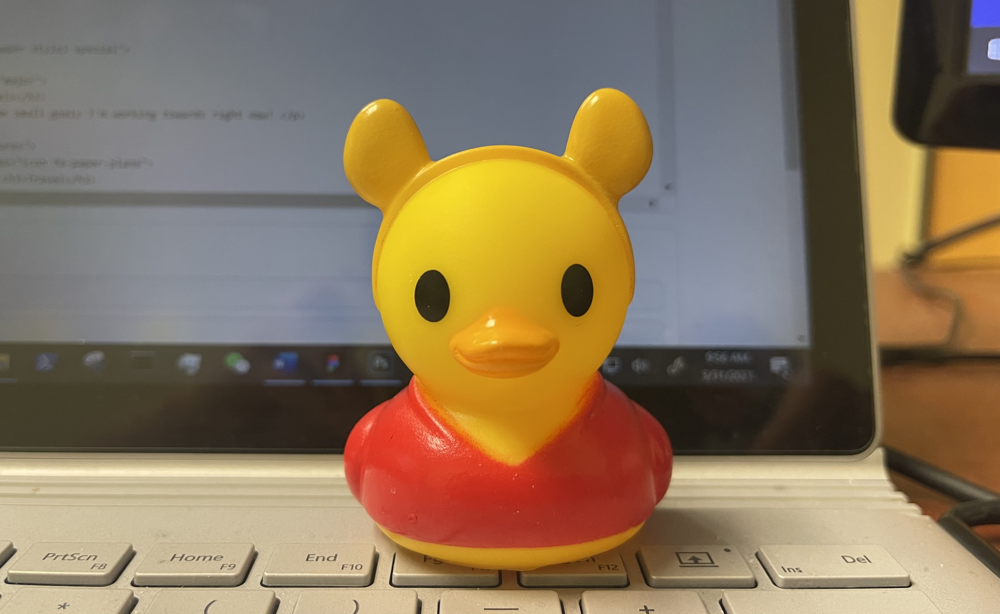

About Goldie
My Story
I'm a Chinese-American who grew up in the suburbs of the Bay Area, California. A variety of influences and exposures in my childhood led me to be more inclined towards multidisciplinary studies.
I made the impulsive decision to leave my small suburban bubble and go to university in China, which was quite a dramatic change in perspective, lifestyle, and environment. This experience at the best university in Asia motivated me to become more career driven and aspirational, but I was unable to return to university in China due to the 2020 COVID-19 pandemic.
This led me to where I am today at the University of Toronto School of Information! I have experience in frontend, backend, UI/UX design, and a bit of circuit design. My tech interests include Autonomous driving, Predictive Analytics, AR/VR, NLP, Data Visualization, and Conversational Agents.
Fun Facts!

I was the first ever female captain of the Tsinghua University CS department swim team.
Personality type: INFP-A, Former ENTP
Academic Interests: Cognitive science, Economics, Philosophy, History, Public policy.
Hobbies: Piano, Swim, Tennis, Art (Oil paint, graphite), Cooking/Baking (major foodie), Reading.
Interests: Learning! Art/Architecture/Aesthetics, Music, Languages and Cultures.